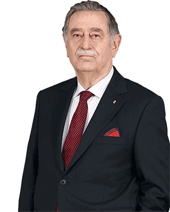

Responsible for numerous milestones in Turkish banking history during its track record of success, Ziraat Bank creates robust synergy between its deep-rooted corporate know-how and ever-expanding expertise to deliver sustainable success.
Esteemed Stakeholders of Ziraat Bank,
In today's ever-changing world, know-how and expertise are key to creating long-lasting value. During this period when the global economy is very fragile, financial actors must have the dynamic organizational structure to respond swiftly to current developments, while embracing a professional corporate governance approach to evaluate today's risks and opportunities efficiently and effectively.
153-Year Track Record Consistent with Sustainability
Responsible for numerous milestones in Turkish banking history during its 153-year track record of success, Ziraat Bank creates robust synergy between its deep-rooted corporate know-how and ever-expanding expertise to deliver sustainable success.
In this one and a half century marked by stable operations, Our Bank has become synonymous with the concept of "sustainability." Ziraat Bank has kept close watch on all sustainability related developments globally and enhanced the added value in its business processes by a significant margin.
I would like to express my happiness and pride in sharing with you our Sustainability Report 2015 issued in accordance with GRI G4 Comprehensive guidelines in order to provide information to our stakeholders on Our Bank's sustainability efforts, and to set examples for the future.
Sustainability Policy Driven by Unrivalled Experience and Know-How
As indicated in the Sustainability Policy adopted by Our Bank's Board of Directors on September 30, 2014, Ziraat Bank's strategic priority is to create value for stakeholders, via operations centered on sustainable profitability and productivity. Aware of the responsibility of being "More Than a Bank," Ziraat Bank assumes key roles in the country's sustainable development process. With an overseas organization that operates 97 hubs in 18 countries, in addition to a domestic network of 1,786 branch locations. Our Bank has the largest service network in the Turkish banking sector. Serving over 33 million customers, Our Bank has translated its unrivalled experience and corporate competencies into a significant competitive edge, boosting net profit by 27.5% over the prior year to TL 5.2 billion.
TL 5.2
Billion
ZİRAAT BANK BOOSTED ITS NET PROFIT BY 27.5% OVER THE PRIOR YEAR TO TL 5.2 BILLION.
Zİraat Bank's strategic priority is to create value for its stakeholders, via operations centered on sustainable profitability and productivity.
Ziraat's "Transformation" Continues
The transformation we initiated in 2012 to take Ziraat Bank's successful performance forward into the future continues apace under the slogan "Together, to a Better Future." This effort enjoys the strong support of all stakeholders–from employees to customers–by means of infrastructural change and corporate development projects. In this process, which is of crucial importance for Our Bank's sustainability approach, we are constructing a strong enterprise architecture that will meet customers' financial needs through the right channel, at the right time and via the right value proposition, in line with the latest advances in information technology.
Ziraat Bank's Core Business Lines
Focusing on Corporate Banking, Retail Banking and International Banking in 2015, Ziraat Bank implemented a number of sustainability projects during the year in a wide range of areas. These included agricultural support loans, SME support packages, intermediation in the state's social assistance payments, and the financing of renewable energy projects. Ziraat Bank undertook these efforts without compromising its principles of maintaining a strong balance sheet and adhering to operational excellence.
Successful Performance Crowned with Awards
Ziraat Bank's strong financial and operational performance was not only valued by various groups of stakeholders, but also deemed worthy of numerous prestigious awards in both international and national platforms. The Banker, a prominent publication of the financial community, designated Ziraat Bank as "Western Europe's 2nd Most Robust Bank," based on criteria such as capital adequacy, asset quality, liquidity, risk environment and profitability. As a result of the "Survey on Differentiation Elements in the Banking Industry" carried out by Akademetre Research, Ziraat Bank was named as the "Most Reliable Bank in Turkey that Makes the Highest Contribution to the National Economy," further bolstering its robust brand image.
"Turkey's Most Reliable Bank"
AS A RESULT OF A SURVEY BY AKADEMETRE RESEARCH, ZİRAAT BANK WAS NAMED "MOST RELIABLE BANK IN TURKEY THAT MAKES THE HIGHEST CONTRIBUTION TO THE NATIONAL ECONOMY."
Future Outlook
Ziraat Bank continues to execute its wide-ranging transformation process in light of the latest developments in the global economy. In the coming period, the Bank will remain keen on being "More Than a Bank" in line with its vision of "Delivering comprehensive and reliable services in Turkey and across the world at the same quality standards." Without compromising our prestigious corporate reputation, we shall include innovative approaches to IT and banking among our corporate competences in an efficient manner, while continuing to create value for our customers and country in the future.
I would like to extend my gratitude to all stakeholders who gave their unwavering support to Ziraat Bank's sustainability efforts, which focused on even more ambitious goals in 2015. In the coming period, we shall continue building on our more than one century and a half success story with the same resolve and ambition.
Best regards,
Muharrem KARSLI
Chairman